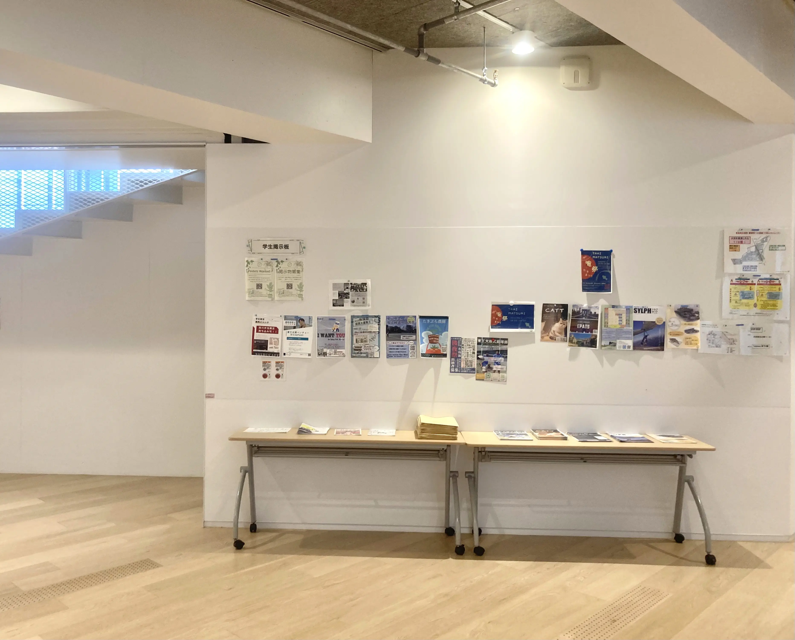
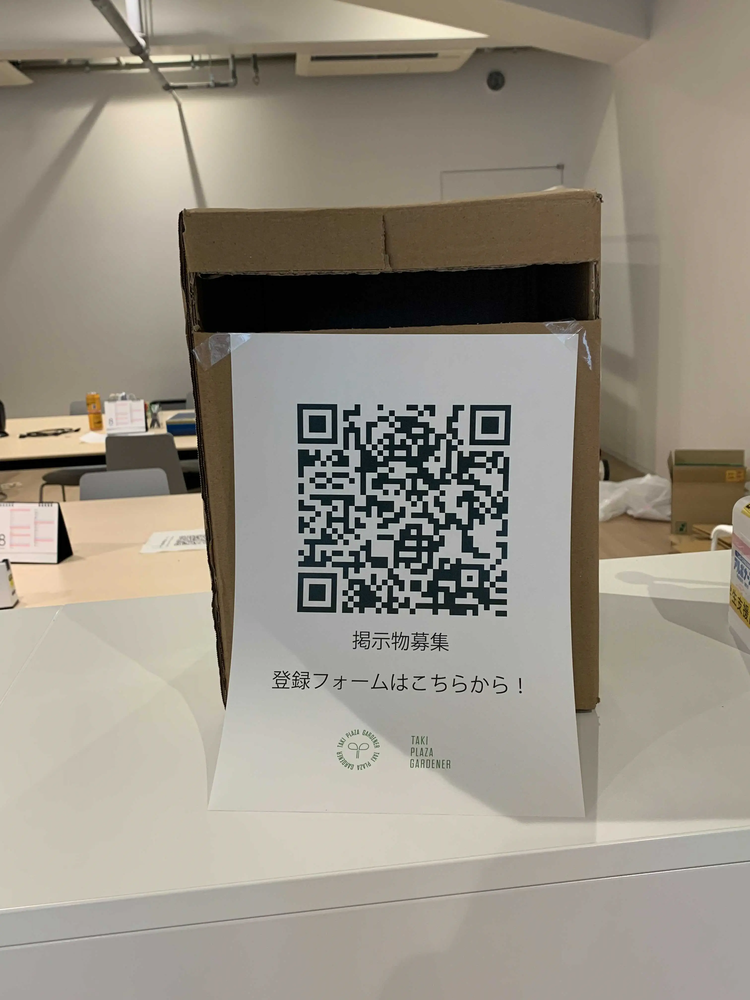
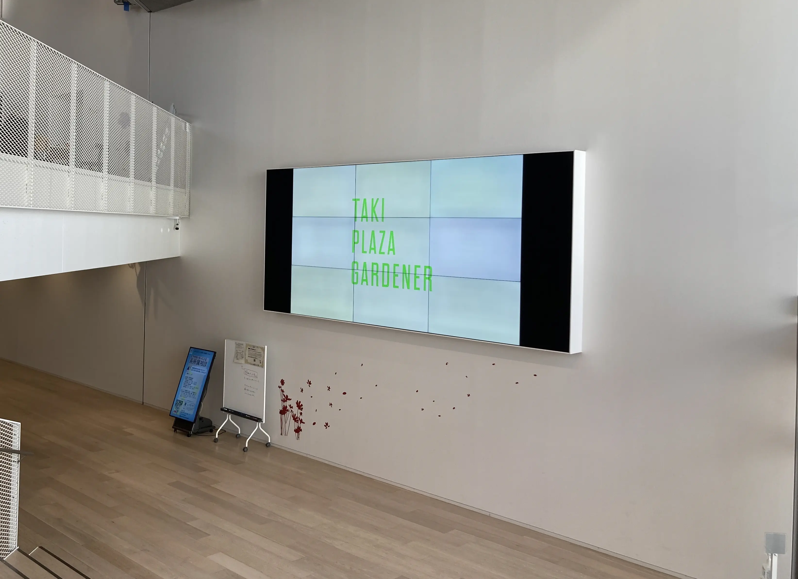
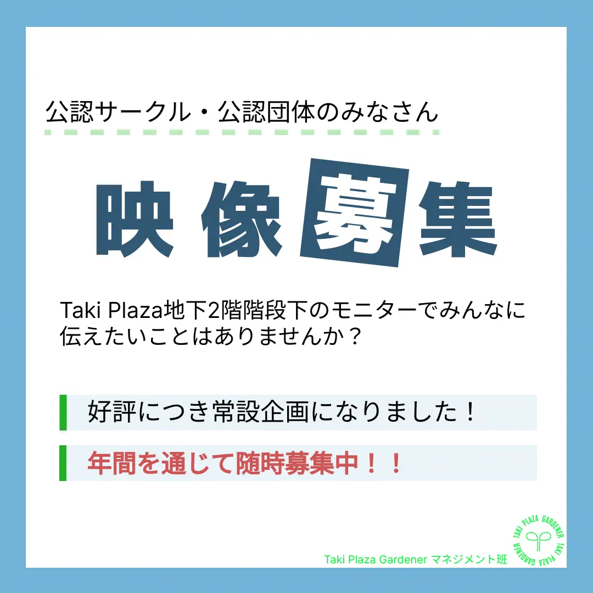

チラシやポスターで、Taki
Plazaに訪れるひとに伝えたいことはありませんか？
Taki Plaza
B2F大階段下の学生掲示板のスペースで、ポスター掲示とビラの設置を受け付けております。皆さんのお申し込みをお待ちしております。

■申し込み方法
１．こちらのフォームより、必要事項を入力してください。フォームには、Taki Plaza B2F Taki Plaza Gardener
居室前のボックスに貼ってあるQRコードからもアクセスできます。
２．フォーム提出後、ボックスにポスター（最大A4サイズ）を投函してください。

新歓用の映像募集中！！
4月中は各サークル、団体の新歓用の映像を流します！多くの新入生が訪れるTakiPlazaで、サークルの紹介をしませんか？
・募集期間：〜3/17(日)
・公開期間：3/27(水)〜4/30(火)
・募集内容：新歓に関する30秒以内の動画or1枚の画像
その他注意事項についてはこちらの募集要項をご覧ください。

■申し込み方法
こちらのフォームから、必要事項を記入の上ご提出ください。
提出できる動画/画像は、1団体あたり、同時に1つまでとします。
申し込みの時期などについては、下記のスケジュールをご覧ください。

■資料(リンクまとめ)
・Taki Plaza 9面マルチモニター サイネージ利用の募集要項 2023/1/15更新
・9面マルチ動画/画像提出（Googleフォーム）
・公開スケジュール
2023年度後半
■FAQ
・非公認の団体でも申し込める？
expand_more
トラブル防止のため、東京工業大学の公認サークルと、学内の組織が支援する学生団体以外からの申し込みはお断りしております。掲示板の利用については、非公認の団体や個人でも申し込みが可能です。ぜひご利用を検討してください。
・どんな内容を募集しているの？
expand_more
自分の団体のPRする媒体として、幅広くご利用いただけます。1分以内の動画、もしくは1枚の画像を募集しています。一部、禁止している内容がありますので、必ず募集要項をご確認ください。
例：普段こんな活動をしています！
イベントを開催します！ぜひ参加してください！
大会に参加しました！こんな結果でした！
・動画を作るのは難しい
expand_more
画像の募集もしております。1枚だけではありますが、20秒間表示することができます。
・複数の動画を流して欲しい
expand_more
こちらの処理の都合上、同時期に流せる動画は1本に限定しておりますので、ご了承ください。
・もっと長い動画を流したい
expand_more
あまり冗長にならないように、できるだけ1分以内に抑えていただきたいのですが、どうしても伸びてしまう場合には個別にご相談ください。ご連絡はTaki
Plaza Gardener マネジメント班へメールにてお願いします。
・期間限定で公開したい
expand_more
公開期間については、こちらで用意した公開スケジュールにしたがって、約月一更新としております。基本的に例外は認めない方針ですのでご了承ください。
・複数期間にわたって公開したい
expand_more
複数の期間にわたって公開したい場合には、お手数ですが、該当するすべての期間の募集期間に同じファイルを提出してください。